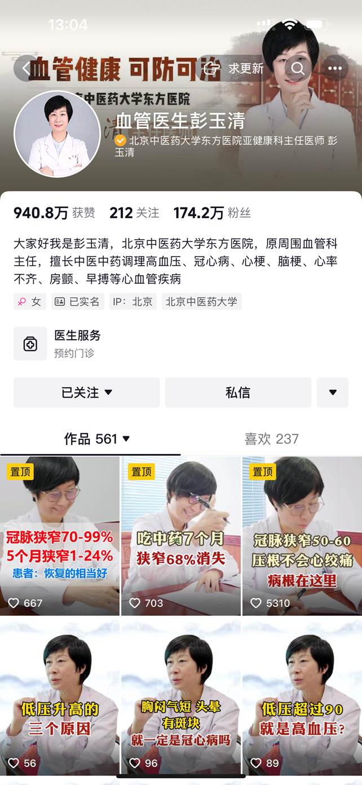
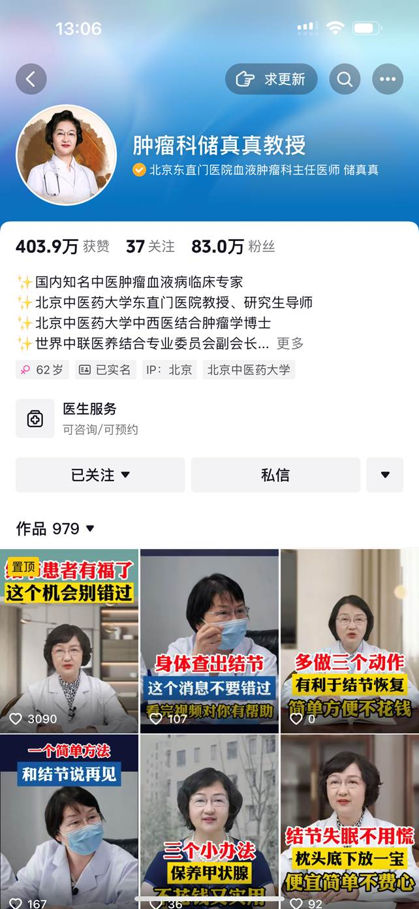
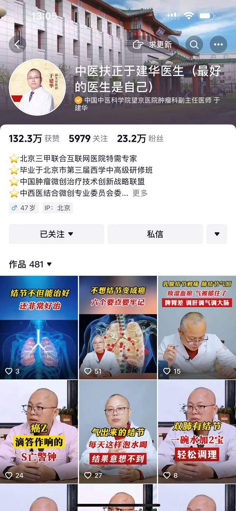
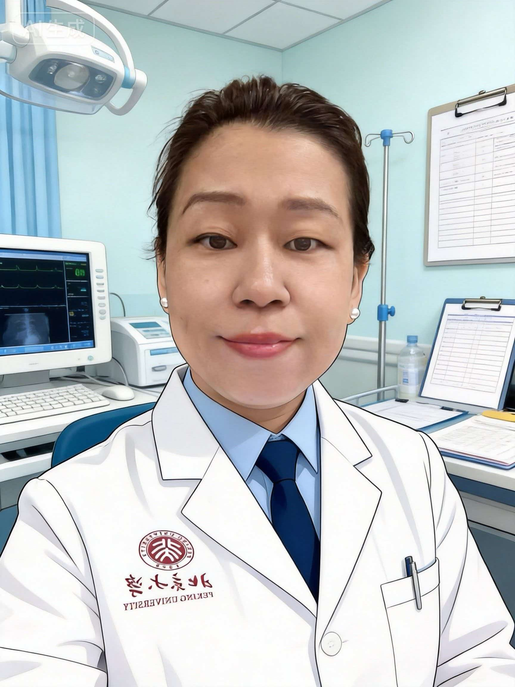
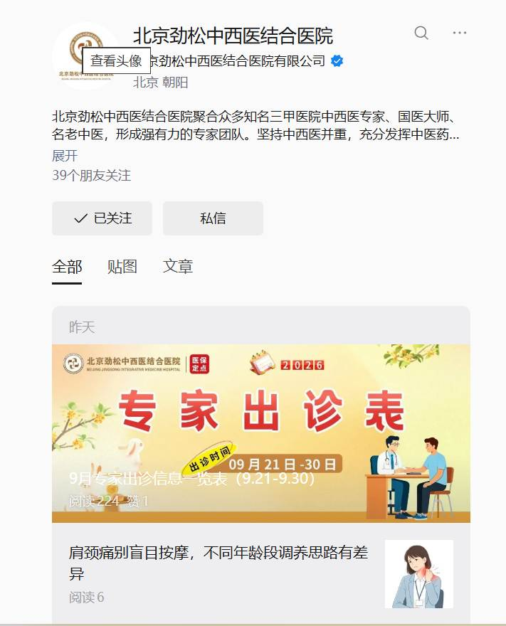
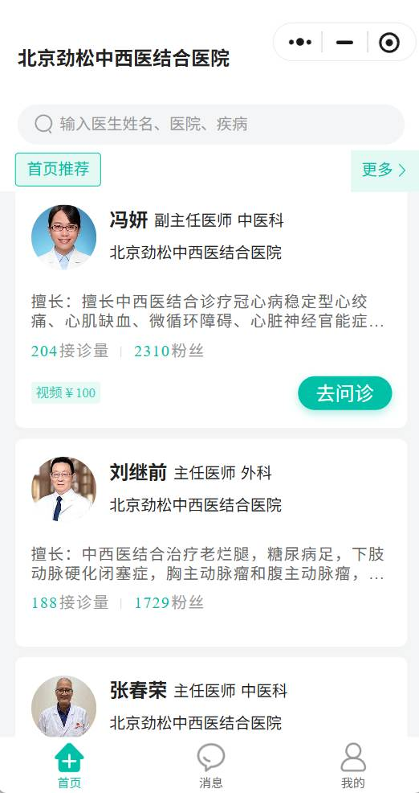

彭
亚健康科
彭玉清 主任医师
北京中医药大学东方医院
原周围血管科主任
擅长中医中药调理高血压、冠心病、心梗、脑梗、心律不齐、房颤、早搏等心血管疾病
预约门诊以专业、严谨、普惠、赋能为理念，做国民身边的健康守门人
北京华誉字节科技有限公司成立于 2019 年，坐落于北京市丰台区。公司立足北京医疗产业核心优势， 精准把握国内大健康行业发展趋势与消费升级需求，深耕 大众健康养护、高端健康管理、康养服务、医疗科普等细分领域， 坚持以专业医疗资源为核心、以用户健康需求为导向，打造标准化、专业化、精细化的大健康服务体系。
凭借扎实的行业积淀与创新的运营思维，公司搭建了完善的品牌运营体系与服务矩阵， 整合医师团队、健康管理师、康养服务人才等核心资源，建立稳定、专业的产业合作生态， 持续推动品牌在北京大健康领域建立良好的行业口碑与市场影响力，助力国民健康服务升级。
私人健康管理、慢病调理指导，全年龄段、多场景的健康服务产品。
康养定制服务，对接优质医疗与康养基地资源，守护银发健康。
名医 IP 内容矩阵，把权威的中医药知识讲给千万家庭听。
深度对接医疗机构、科研院所与行业上下游，共建产业合作生态。
让三甲医院的好医生被更多人看见，让权威中医科普触手可及
公司深度运营北京多家三甲医院知名专家的医生 IP 账号，覆盖 肿瘤、血液、心脑血管、老年病、周围血管外科、亚健康等核心科室。 每一位医生均完成实名认证，通过短视频科普、线上问诊咨询、门诊预约等服务， 架起名医与患者之间的信任桥梁，把优质医疗资源送到千家万户。
全部签约医生均经三甲医院执业资质核验，权威可信。
足不出户即可与名医线上沟通，获得专业的诊疗建议。
支持按医生姓名、医院、疾病精准搜索，一键预约门诊。
持续输出权威中医药科普视频，惠及百万级粉丝家庭。
北京中医药大学东方医院
原周围血管科主任
擅长中医中药调理高血压、冠心病、心梗、脑梗、心律不齐、房颤、早搏等心血管疾病
预约门诊北京中医药大学东方医院
北京劲松中西医结合医院
中西医结合周围血管外科专家，擅长老烂腿、糖尿病足、下肢动脉硬化闭塞症、主动脉瘤
可问诊中日友好医院
擅长运用中医治疗老年病等相关疾病，中医药调理斑块、高血压、冠心病及脑梗康复
已实名北京中医药大学东直门医院
研究生导师 · 中西医结合肿瘤学博士
国内知名中医肿瘤血液病临床专家，世界中联医养结合专业委员会副会长，擅长结节及甲状腺调理
可咨询 · 可预约中国中医科学院望京医院
北京三甲联合互联网医院特需专家
中国肿瘤微创治疗技术创新战略联盟中西医结合微创专业委员会委员，擅长肺结节等结节类疾病调理
特需专家医生主页聚合 实名认证、执业资质、粉丝与作品等信息， 支持图文咨询、门诊预约与按「医生姓名 / 医院 / 疾病」精准搜索， 为用户提供一站式中医药健康服务入口。



汇聚国医大师与三甲名医 · 中西医并重 · 充分发挥中医药优势
北京劲松中西医结合医院位于北京市朝阳区，聚合众多知名三甲医院中西医专家、 国医大师、名老中医，形成强有力的专家团队。 医院坚持中西医并重，充分发挥中医药在慢病防治、康复调养中的独特优势， 为周边居民及全国患者提供优质、规范的中西医结合诊疗服务。
医院开通专家出诊表、在线挂号问诊、健康科普等线上服务， 患者可按医生姓名、医院、疾病一键搜索预约，让就医更加便捷高效。

中医科 · 北京劲松中西医结合医院
擅长中西医结合诊疗冠心病稳定型心绞痛、心肌缺血、微循环障碍、心脏神经官能症
外科 · 北京劲松中西医结合医院
中西医结合治疗老烂腿、糖尿病足、下肢动脉硬化闭塞症、胸主动脉瘤和腹主动脉瘤
中医科 · 北京劲松中西医结合医院
中医科资深专家，临床经验丰富，致力于中西医结合诊疗与中医药调理服务
医院官方公众号与线上挂号平台同步运行，定期发布 专家出诊表、节气养生、慢病调养等健康科普内容， 支持在线查看专家、预约挂号与图文问诊。
例：「专家出诊表（09 月 21 日 — 09 月 30 日）」「肩颈痛别盲目按摩——不同年龄段调养思路有差异」等科普内容持续更新。


聆听创始人心声，见证中医药诊疗与康养服务的初心与坚守
与国家「十四五」规划同频共振，整合三甲医院名医资源，为社会健康事业贡献微薄力量。
汇聚国医力量，让顶尖的中医药诊疗与康养服务惠及更多家庭。
欢迎医疗机构、行业伙伴与广大用户与我们联系
北京市丰台区富丰路 2 号 2-22 幢十六层 01 号
173 **** **52
ch***@163.com
91110114MA01H1B38P